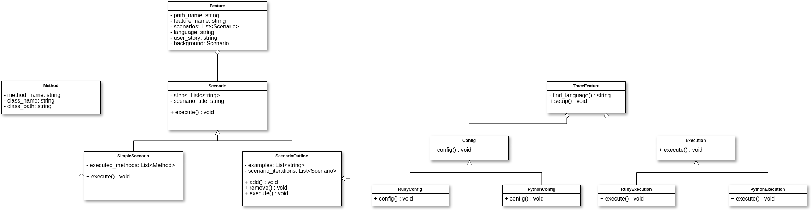
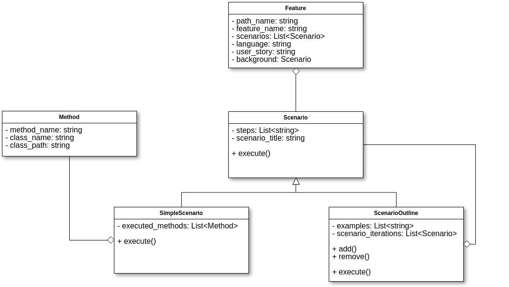

Diagrama de Classes
Versão Atual - 10/06/2018
Aqui se encontra a versão mais atual do diagrama, de acordo com a implementação. À medida que o sistema evolui, deve ser gerada uma versão nova do modelo, se necessário.

Pontos de Reutilização
O sistema apresenta dois módulos bem distintos - O primeiro tem por responsabilidade modelar o contexto a ser analisado, criando a estrutura que servirá de base para a criação do JSON final. Este, a princípio, não é extensível, pois está relacionado à lógica interna e específica da biblioteca: define o formato de uma Feature, de um Cenário, etc.
O segundo módulo diz respeito às diversas estratégias que podem ser aplicadas para a configuração e execução do rastreamento de features - aqui se encontra a capacidade de reutilização e extensão do sistema. Caso um usuário deseje adicionar algum passo extra de verificação, ou adicionar suporte a uma nova linguagem ou framework, por exemplo, basta adicionar suas próprias classes de configuração e execução, contanto que estejam conformes à interface definida nas classes BaseConfig e BaseExecution.
Versões Anteriores
09/06/2018
